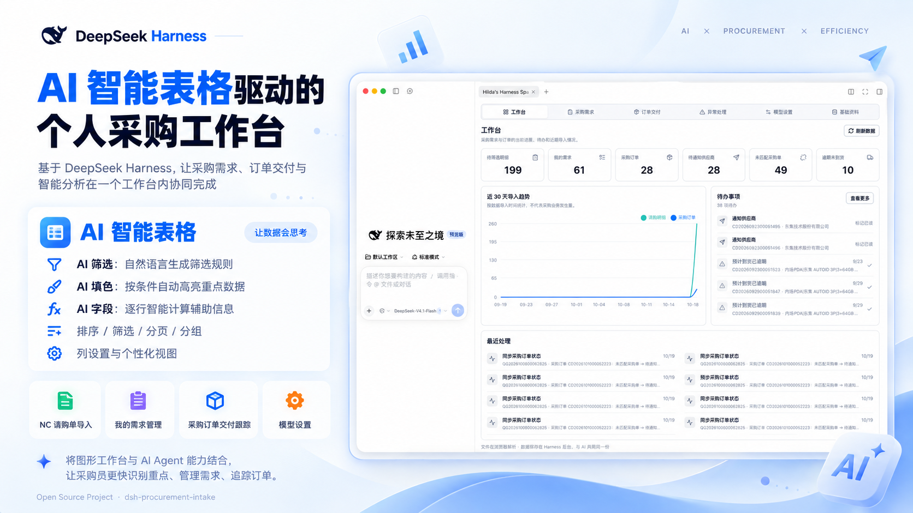

 AI PRODUCT · PROCUREMENT 2026-10-19 产品实践 · AI 表格 采购没有 SRM，AI 工作台应该从哪一步开始？ 从多维表和 Excel 出发，讨论 AI 智能表格与 Agent 如何进入采购工作流，以及本地采购库与模型调用之间的数据边界。 DeepSeek Harness AI Table 采购产品 阅读全文 ↗
PRODUCT FIELD NOTES 2025-07-13 职业经历 · WMS WMS 产品经理激荡三十年 从学生到 WMS 产品经理，我的人生就像一个“未上线的版本”：一直在更新，一直在热更，也一直在寻找更稳定的版本号。 WMS 产品经理 数字化交付 阅读全文 ↗